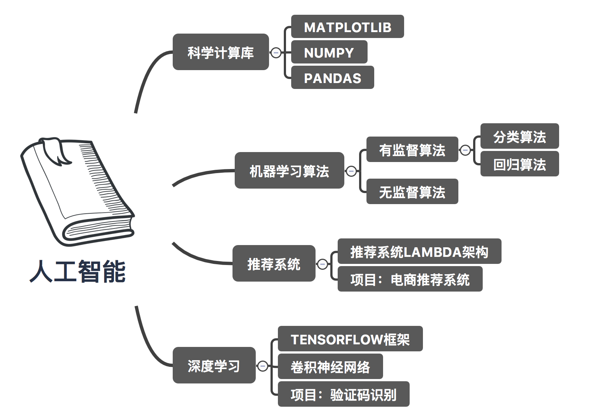
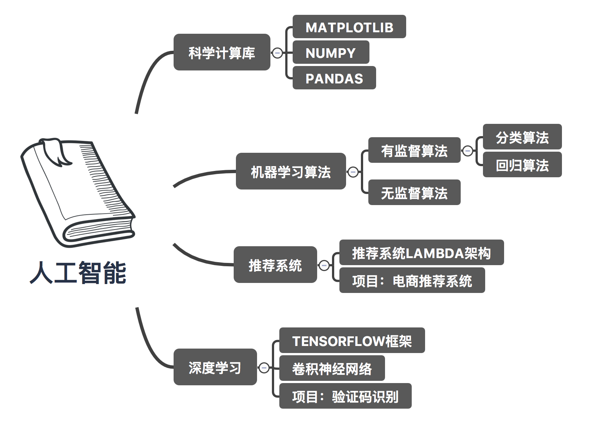

人工智能概述
1 人工智能应用场景

2 人工智能小案例
案例一：

参考链接：https://quickdraw.withgoogle.com
案例二：

参考链接：https://pjreddie.com/darknet/yolo/
案例三：


查看更多：https://deepdreamgenerator.com/
3 就业方向


4 人工智能阶段课程安排

案例一：
参考链接：https://quickdraw.withgoogle.com
案例二：
参考链接：https://pjreddie.com/darknet/yolo/
案例三：
查看更多：https://deepdreamgenerator.com/
